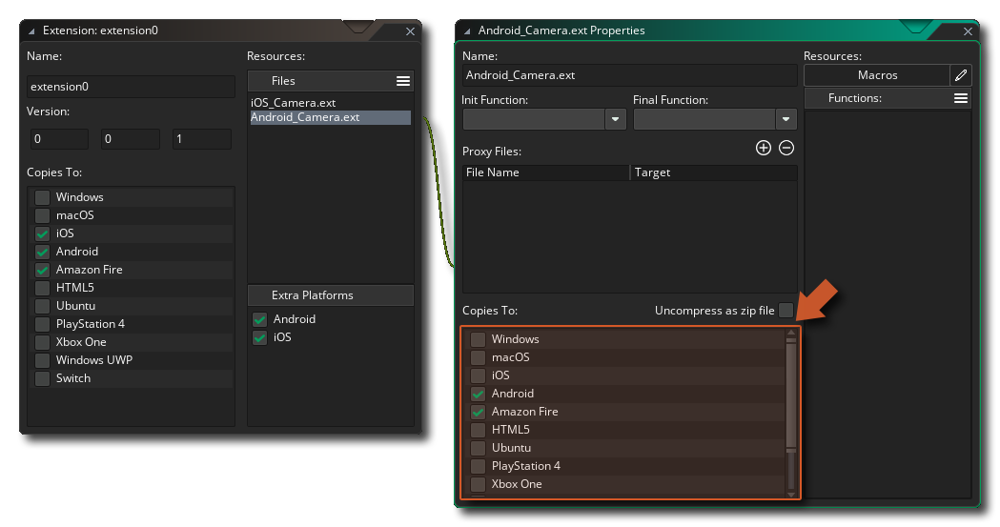
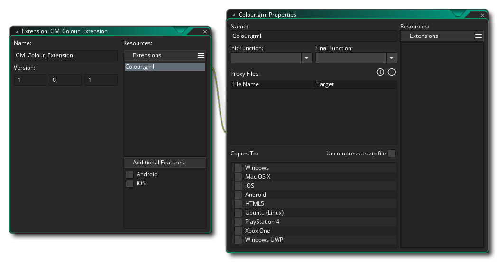
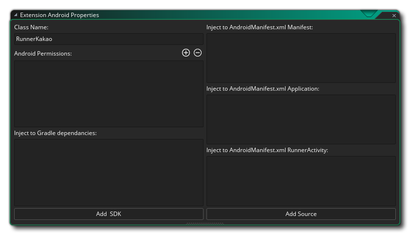

Se puede usar un paquete de extensión para agregar una cantidad de funciones y constantes adicionales al lenguaje de GameMaker (GML), o como una forma de transferir activos de juego o incluso proyectos completos fácilmente entre personas. Si la extensión es para agregar funcionalidad adicional, las funciones utilizadas pueden vincular su juego a SDK externos o código fuente escrito en otros lenguajes (como Java para Android, por ejemplo), así como a GML nativo. 
Normalmente, las extensiones de terceros serán de GameMaker Marketplace y aquellas a las que se haya suscrito aparecerán en la ventana Biblioteca de Marketplace y se pueden instalar desde allí, o haciendo clic con el botón derecho.  en la carpeta de recursos de Extensiones y seleccionando Agregar existente desde mi biblioteca. Si no recibió su paquete de extensión del Mercado, aún puede agregarlo a un proyecto al hacer clic con el botón derecho
en la carpeta de recursos de Extensiones y seleccionando Agregar existente desde mi biblioteca. Si no recibió su paquete de extensión del Mercado, aún puede agregarlo a un proyecto al hacer clic con el botón derecho  la carpeta Extensiones en el árbol de recursos y esta vez seleccionando Agregar existente.
la carpeta Extensiones en el árbol de recursos y esta vez seleccionando Agregar existente.
Si tienes un *.GMEZ creado con una versión anterior de GameMaker Studio puede agregarlos seleccionando el botón derecho del mouse  opción de menú Importar archivo.
opción de menú Importar archivo.
Para obtener más información sobre el uso y la creación de paquetes de extensión, consulte las siguientes secciones:
Una vez que haya agregado una extensión, puede comenzar a usarla en sus proyectos; sin embargo, debe asegurarse de que las propiedades de la extensión coincidan con la plataforma objetivo y edite los objetivos de exportación para los archivos de extensión de acuerdo con lo siguiente:
- Todos los objetivos: extensiones GML. Estas son extensiones hechas usando el lenguaje de GameMaker (GML) y son compatibles con todas las plataformas de destino.
- Windows (Standard, UWP, XBoxOne): puede usar archivos DLL de Windows (bibliotecas de enlace dinámico).
- Mac OS: el objetivo de Mac OS puede usar los archivos DyLib estándar para extensiones.
- Ubuntu (Linux): para el destino de Ubuntu, debe asegurarse de que su extensión use archivos SO.
- Html5: estas plataformas pueden usar extensiones de JavaScript.
- Android: esta plataforma requiere una extensión escrita en Java o un Android Framework SDK.
- iOS: las extensiones para esta plataforma están escritas en Objective C y requieren un archivo *.mm y un archivo *.h, o si se usa cualquier Frameworks, un archivo nativo *.a precompilado.
- PlayStation: para PlayStation 3 o 4, sus extensiones deben ser archivos PRX, con cada objetivo requiriendo un PRX diferente para cumplir con las especificaciones del objetivo (ya sea PS3 o PS4). Si trabaja en un PSVita, la extensión debe ser SUPRX en su lugar.
Para cambiar la plataforma de destino para un archivo de extensión o marcador de posición específico, primero debe abrir las propiedades de extensión (hacer doble clic
la extensión en el árbol de recursos o el uso
y seleccione Abrir propiedades ), y luego, una vez en las propiedades de la extensión, seleccione el archivo de recursos de la derecha que desea editar: 
NOTA: Si está exportando al destino macOS o Ubuntu, puede configurar la opción "Descomprimir como archivo zip" para conservar los permisos de archivo para la extensión.
Una vez que haya instalado su extensión, puede usar las funciones y constantes para ello de la misma forma que lo haría con las funciones integradas y las constantes utilizadas en el lenguaje de GameMaker. Si su juego es multiplataforma (por ejemplo, está diseñado para ejecutarse en objetivos Windows y Android ), debe hacer una comprobación del sistema operativo antes de llamar a las funciones específicas de la extensión para evitar problemas, por ejemplo:switch(os_type)
{
case os_android:
call_android_extension_function(x, y, z);
break;
case os_windows:
call_windows_extension_function(x, y, z);
break;
}Tenga en cuenta que para diferentes plataformas sus extensiones pueden compartir nombres de funciones, por lo que si tiene una extensión con distintos archivos para (por ejemplo) mostrar un mensaje para Windows y Android, ambos archivos de extensión pueden compartir el mismo nombre de función siempre que sean ambos configurados para exportar solo a sus respectivas plataformas.
Para crear una extensión, primero debe hacer clic con el botón derecho
Para agregar un archivo a la nueva extensión, debe hacer clic en el ícono de menú y seleccione un archivo de marcador de posición o el archivo real que se requiere para la plataforma de destino:
Un marcador de posición "genérico" es un archivo que puede ser de cualquier tipo, excepto los requeridos por las plataformas específicas (por lo que no hay archivos DLL o SO, por ejemplo), y no se usará excepto como un archivo "enlazador" para conectar una conjunto de funciones o constantes con la extensión dada (en general, es solo para uso con extensiones iOS y Android, que se explica en las siguientes secciones para esos destinos). También puede agregar archivos de marcador de posición "GML" y "JS" para un uso más específico.
Normalmente no será necesario utilizar marcadores de posición a menos que sea para iOS y Android, por lo que elegiría la opción Agregar archivos para agregar uno de los siguientes archivos según la plataforma de destino para la que se encuentren:
- .gml: Este es un archivo creado solo con el lenguaje GameMaker y es compatible con todas las plataformas.
- .js: Este es un formato de extensión de JavaScript y solo es compatible con los módulos de destino de JS (HTML5).
- .dll: Este es un formato de extensión de biblioteca de enlace dinámico y solo es compatible con los objetivos de Windows, UWP y Xbox One (cada destino necesitará un archivo *.dll diferente compatible con sus especificaciones).
- .dylib: Este es el equivalente de Mac de una DLL y solo es compatible con el objetivo de Mac (no con iOS).
- .so: Este es el equivalente de Linux de un archivo DLL y solo es compatible con el destino de Ubuntu (Linux).
- .prx: Este es un formato de archivo para agregar la funcionalidad del objetivo de PS4 (cada objetivo necesitará un archivo *.prx diferente compatible con sus especificaciones).
Notarás que no hay ningún tipo de archivo para Android ni iOS, lo cual se debe a que su configuración es ligeramente diferente. Más abajo puede encontrar explicaciones sobre cómo configurarlos, pero primero veamos cómo crear una extensión GML general para cualquiera de las plataformas de destino, ya que el proceso es el mismo para todos ellos.
Para empezar, necesita crear el archivo que se va a usar. Para una extensión GML, esto sería un archivo de texto (guardado con .gml extensión) y se formatearía algo como esto:
#define c_alice_blue
return make_color_rgb(240,248,255);
#define instance_create_colour
var i = instance_create_layer(argument0, argument1, argument2);
with (i)
{
image_blend = argument3;
}
return i;Como puede ver, comenzamos cada sección con un #define llamada, que en el ejemplo anterior se usa para definir dos funciones. No es necesario que proporciones campos de argumentos para las funciones, ya que se agregarán más adelante, simplemente utiliza la definición, luego el nombre de la función y sigue adelante y agrega el GML para que coincida. Si estuviera escribiendo una extensión DLL o JS, el proceso sería similar pero en el idioma correcto para el formato del archivo de extensión.
Una vez hecho esto, debe agregar el archivo a la extensión (explicada anteriormente) que encadenará una nueva ventana a las Propiedades de las Extensiones para las Propiedades del archivo: 
Aquí seleccionaría la plataforma de destino para la extensión (para GM las seleccionaría todas), así como cambiaría el nombre del archivo de extensión y establecería algunos otros detalles, que trataremos en un momento. Antes que nada, queremos agregar nuestras constantes y funciones para que el usuario pueda llamar a la extensión desde su código de proyecto. Para eso, debe hacer clic en el botón de menú de extensiones y seleccione lo que necesita:
Seleccionar Add Function le permitirá agregar una función a la extensión que luego se puede llamar en GameMaker Studio 2 como lo haría con cualquiera de las funciones integradas. La siguiente ventana se abre para que usted defina la función en:
En la imagen de arriba hemos llenado el editor de funciones con los detalles para la función instance_create_colour que definimos en nuestro script de extensión GML (el editor de funciones no es solo para definir funciones GML y será el mismo para cualquier otro tipo de extensión). Puede ver que hemos asignado un nombre a la función, que es lo que llamaría al usar la función en su proyecto, y este nombre no tiene que coincidir con el usado en la extensión; puede establecerlo en cualquier cosa que desee y luego use la opción Nombre externo para vincularlo al nombre real definido en la extensión. Debajo hay una sección para definir el texto de la Ayuda, que es el texto que se utilizará en la ventana emergente completa del código y el texto auxiliar en la parte inferior del editor de código.
A continuación puede definir el tipo de retorno, que puede ser un valor doble (valor de coma flotante de número real) o una cadena ; si no hay nada devuelto por la función externa, entonces esto no importa, y debajo de eso define los argumentos que la función tomar.
Finalmente, agrega los argumentos (si los hay) que la función puede tomar. Los argumentos pueden ser dobles o cadenas, y puede agregarlos haciendo clic en el botón Agregar
y eliminarlos haciendo clic en el botón Eliminar
. Tenga en cuenta que si está creando un Windows dll archivo y tiene más de cuatro argumentos, todos los argumentos deben ser del mismo tipo.
Una vez que haya hecho todo eso, la función estará lista para ser utilizada en un proyecto y se mostrará en autocompletar y también tendrá un código de color. Las funciones definidas también se pueden configurar como Funciones de inicio o Funciones finales, lo que significa que se las llamará automáticamente cuando se inicie el juego (Init) y cuando el juego finalice (Final).
¡IMPORTANTE! Todas las plataformas admiten la llamada a la función Init, pero no todas las plataformas realizarán la llamada a la función Final. Esto se debe a que ciertas plataformas simplemente cerrarán la aplicación sin dar ningún aviso o tiempo para que se llame a esta función. Las plataformas que se ven afectadas por esto son: iOS, Android, HTML5, PlayStation y XboxOne.
La otra opción que tienes es crear una macro. Una macro puede ser un valor constante o un único fragmento de código (para obtener más información sobre macros, consulte aquí ). Por ejemplo, podríamos eliminar la función definida de nuestra extensión GML de ejemplo anterior para el color c_alice_blue y hazlo una macro en su lugar:El editor aquí se explica por sí mismo: usted da el nombre de la macro / constante y el valor, o una línea corta de código. Tenga en cuenta que si la macro es una línea de código, se evaluará cada vez que se llame a la macro.
Al trabajar con múltiples plataformas de destino, vale la pena señalar que puede crear una única extensión con solo un conjunto de funciones / macros que funcionarán en todas las plataformas. Esto se logra agregando solo una de las bibliotecas de enlaces a su juego como una extensión y ubicando las otras en la lista de Archivos Proxy de la ventana Propiedades de Extensión. Por ejemplo, supongamos que tiene una extensión de Windows con el dll "Haggis.dll". Simplemente duplicaría esta dll como Mac DyLib, llamándola "libHaggis.dylib" y asegurándose de que los nombres de las funciones internas coincidan con los de la DLL original de Windows. Este DyLib luego se agregará a los Archivos Proxy y se configurará para exportar cuando el juego se ejecute en el objetivo Mac, y GameMaker Studio 2 usará automáticamente cuando se llamen las funciones de extensión.
Para agregar un archivo proxy, simplemente haga clic en
en la ventana Propiedades de la extensión para la extensión y busque la ubicación del archivo. Una vez que se agrega, es posible que necesite cambiar el destino de la extensión al módulo apropiado, y la próxima vez que ejecute su juego se incluirá como un proxy para esa plataforma. También puede eliminar los archivos proxy haciendo clic en
botón, que eliminará el último en la lista cada vez que presione.
Una vez que haya agregado sus archivos proxy, se almacenarán en YYP de su juego, en la carpeta Extensiones (puede encontrarlas fácilmente haciendo clic con el botón derecho
Es muy importante que sus archivos proxy sigan las convenciones de nomenclatura que se enumeran a continuación, ya que GameMaker Studio 2 analizará estos nombres y asignará el módulo de destino para el archivo de acuerdo con su extensión y nombre, y vinculará automáticamente los archivos por usted. Si no sigues estas convenciones, es posible que tu juego no funcione en tiempo de ejecución, ya que GameMaker Studio 2 no podrá determinar qué archivo usar o no cargará el archivo correctamente.
Las convenciones de nomenclatura para cada plataforma objetivo se dan a continuación:
Plataforma Nombres Windows <Nombre>.dll. Linux <Nombre>.so, lib <Nombre>.so, <Nombre> _linux.so, lib <Nombre> _linux.so Mac OS X <Nombre>.dylib, lib <Nombre>.dylib HTML5 <Nombre>.js PS4 <Nombre>.prx, lib <Nombre>.prx, <Nombre> _ps4.prx, lib <Nombre> _ps4.prx Xbox One <Nombre> _xboxone.dll Usando las convenciones anteriores, cambiaría la parte <Nombre> por el nombre del archivo base para el que está agregando los archivos proxy.
Para crear una extensión para Android debes hacerlo en dos partes. La primera parte sería agregar la extensión en sí, junto con los archivos necesarios, etc.... y la segunda es crear las funciones y macros / constantes que requiere la extensión. Las funciones y las constantes se agregan con los archivos de marcador de posición para agruparlos, por lo que debe agregar un marcador de posición y luego definir las funciones y las macros tal como se explica en la sección anterior. Para agregar el resto de los archivos, primero debe marcar la casilla de verificación de Android en la sección Funciones adicionales del editor: 
Aquí das los siguientes detalles:
- Nombre de clase: Su extensión puede tener varias clases, con cada clase tiene sus propias funciones y constantes, por lo que debería darle un nombre que refleja su propósito.
- Permisos de Android: aquí puede agregar cualquier permiso adicional que requiera su extensión. Lo que estos permisos dependen dependerá completamente del uso que tenga la extensión, por lo que debe consultar la documentación suministrada por Google para la plataforma Android o, si usa un SDK de terceros, la documentación que viene con el SDK. Para agregar un nuevo permiso, debe hacer clic en
- Dependencias de inyección a Gradle: aquí puede agregar cualquier código adicional que necesite inyectarse (agregarse) a las dependencias de compilación de Gradle.
- Inyecta a Android Manifest.xml Manifiesto: Aquí se ajusta ningún código extra para ser inyectado (añadido) al Android archivo de manifiesto XML cuando el juego está construido para las pruebas o la liberación final. Asegúrese de revisar esto (y sus permisos) cuidadosamente antes de enviar cualquier juego a la tienda, ya que la configuración incorrecta hará que su juego no se entregue correctamente.
- Inyectar en Android Manifest.xml Aplicación: aquí configura cualquier código adicional que se inyectará (agregará) al archivo XML del Manifiesto de Android bajo el encabezado Aplicación cuando su juego esté diseñado para pruebas o lanzamiento final. Asegúrese de revisar esto (y sus permisos) cuidadosamente antes de enviar cualquier juego a la tienda, ya que la configuración incorrecta hará que su juego no se entregue correctamente.
- Inyectar en Android Manifest.xml RunnerActivity: aquí configura cualquier código adicional que se inyectará (agregará) al archivo XML del Manifiesto de Android bajo el encabezado RunnerActivity cuando su juego esté diseñado para pruebas o lanzamiento final. Asegúrese de revisar esto (y sus permisos) cuidadosamente antes de enviar cualquier juego a la tienda, ya que la configuración incorrecta hará que su juego no se entregue correctamente.
Una vez que haya configurado esto correctamente, tendrá que agregar los archivos necesarios para que funcione su paquete de extensión. Para hacer esto, debe hacer clic en los botones en la parte inferior, agregar Agregar SDK o Agregar origen y luego buscar los archivos que desea agregar. Los archivos agregados se almacenarán en el directorio de origen de Android junto con su extensión. Puede abrir esta ubicación en cualquier momento haciendo clic con el botón derecho
Para obtener más información sobre cómo crear extensiones de Android, consulte la base de conocimientos de YoYo Games.
Para crear una extensión para iOS, debes hacerlo en dos partes. La primera parte sería agregar la extensión en sí, junto con los archivos necesarios, etc.... y la segunda es crear las funciones y macros / constantes que requiere la extensión. Las funciones y las constantes se agregan con los archivos de marcador de posición para agruparlos, por lo que debe agregar un marcador de posición y luego definir las funciones y las macros tal como se explica en la sección anterior. Para agregar el resto de los archivos, primero debe marcar la casilla de verificación de iOS en la sección Funciones adicionales del editor:
Aquí das los siguientes detalles:
- Indicadores de enlace / Indicadores del compilador: algunos marcos y SDK de terceros requieren la adición de indicadores del enlazador adicionales y banderas del compilador para trabajar, que se pueden especificar aquí (consulte la documentación que acompaña al SDK o al marco en cuestión para obtener más información).
- ClassName: su extensión puede tener múltiples clases, cada clase tiene sus propias funciones y constantes, por lo que debe darle un nombre que refleje su propósito
- Marcos de sistema: aquí puede agregar cualquier sistema de sistema iOS a su extensión. Estos se agregan haciendo clic en
- Inyectar en Info.plist: aquí puede agregar cualquier código para ser inyectado en el info.plist archivo.
- Frameworks y paquetes de terceros: esta sección es para agregar marcos de terceros y paquetes de SDK. Al igual que con los trabajos de marcos del sistema, haga clic en
Si su extensión ha agregado Frameworks del sistema o Frameworks de terceros, estos se mostrarán en la ventana Propiedades de la extensión, cada uno con una casilla de verificación al lado. Si marca la casilla de verificación, está habilitando la vinculación débil, que es útil si necesita "anular" cualquier símbolo de la biblioteca incluida con su propio valor, pero debe tenerse en cuenta que al hacerlo se ralentizará la vinculación.
Para obtener más información sobre cómo crear extensiones de iOS, consulte la Base de conocimientos de YoYo Games.


YoYo Games Extensiones de terceros
Las versiones heredadas de GameMaker tenían incorporadas muchas funcionalidades de terceros, pero esto era ineficiente y difícil de mantener, ya que si el tercero cambiaba alguna funcionalidad específica, todo el GameMaker IDE y el tiempo de ejecución tendrían que actualizarse. Por lo tanto, las versiones actuales han adoptado el uso de paquetes de extensiones para agregar soporte de terceros a sus juegos. Esto significa que puede agregar solo aquellas funciones adicionales que necesite y que incluso puede adaptarlas y editarlas para adaptarlas a sus necesidades específicas.
La mayoría de estas extensiones se descargarán e instalarán cuando seleccione una opción de juego específica (como Facebook o Google Ads, por ejemplo), pero puede encontrar más información sobre ellas en los siguientes artículos de la Base de conocimientos de YoYo Games:
Puede encontrar las extensiones desde la siguiente página de Marketplace:
Tenga en cuenta que estas extensiones vienen con una demostración y un archivo de ayuda que explica cómo usarlas, y como tales, sus funciones no están cubiertas en el manual.